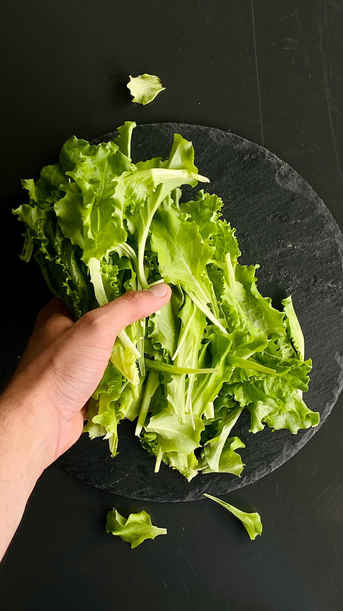

Chow-Chow

Jars of chow chow relish are lined up on a shelf.
Chow chow is a type of condiment relish that is very common in the Deep South of the United States.
Depending on state or region or even personal taste, it can range from mild and sweet to very spicy.
Most commonly, it is both sweet and a little spicy.
Variety is not just seen in the taste--it may also be finely chopped or in fairly large chunks, similar
to giardiniera. The ingredients themselves tend to vary based on what is typically grown in the region
where it is made and regional tastes. This recipe is a typical Western North Carolina mountain recipe.
This recipe is a canning version. There are other versions that are fermented instead of canned.
Ingredients
- 1 small head green cabbage, finely chopped
- 6-8 green tomatoes, finely chopped
- 6 medium green peppers, finely chopped
- 6 large onions, finely chopped
- 2-3 hot banana peppers, finely chopped, optional
- 1/4 cup canning or pickling salt
- 3-5 cups white vinegar
- 2-3 cups sugar
- 1 tablespoon celery seed
- 1 tablespoon mustard seed
Steps
- Finely chop all ingredients. Place in a large bowl, mix in the salt, and let it
sit covered in the refrigerator for 8-12 hours, or overnight, to draw the water out of the vegetables.
- Drain the vegetables well and squeeze out excess moisture.
- In a large pot bring the vinegar, sugar, and spices to a boil. Add the drained vegetables,
return to a boil, then reduce the heat and simmer for 10-20 minutes, until the vegetables are tender.
- Pack the hot misture into sterilized jars, leaving 1/4 inch head space, and seal.
- Process the jars in a boiling water bath for 10 minutes. This step may be skipped if not intending to keep
them stored long-term.
Home
Kilt (Wilted) Lettuce

Photo by Filipp Romanovski on
Unsplash
Kilt Lettuce, or wilted lettuce, is a very well-known dish in the North Carolina mountains, as well as the rest of Appalachia.
The dish is traditionally comprised of leaf lettuce or wild branch lettuce, wild onion (also called ramps), and bacon grease.
People often grow some vegetables around their homes, even if they don't have a full garden and lettuce, onions, and tomatoes
are the major players. If a person is does not particular want to forage for the wild lettuce and ramps, it is completely
acceptable, and sometimes a preference, to use green leaf lettuce and green onions that were either grown at home or purchased
from the grocery store.
This dish varies according to taste and may include other leafy greens, such as dandelion greens, heated olive or other oil,
any type of vinegar heated up and mixed in with the bacon grease or oil. sugar, salt, pepper, the actual bacon itself, boiled
eggs, or any number of other ingredients. The core recipe, lettuce, onions, and bacon greaase, alone is loved as much as all
the varieties that can be made. This version adds the vinegar, simply because it cuts the richness of the bacon grease and adds
a little tang. This recipe makes a lot, as this dish is light despite the grease, and many people eat it by itself.
Ingredients
- 1 large salad bowl of wild branch or green leaf lettuce
- 1 pound of bacon
- 1 large bunch/fistful of ramps or 3-5 green onions
- salt to taste
- pepper to taste
- 2 tablespoons red wine, apple cider, or other vinegar
Steps
- Wash and dry the lattuce and ramps/onions.
- Tear the lettuce into bite-seized pieces or cut into strips
- If using green onions, slice them very thin, using the entire onion (white and green parts).
If using ramps, cut them into small pieces, according to your own preference. Some people
Some people prefer to treat them like chives and cut them very small, while other like longer pieces.
- Cook the bacon in a pan on the stove top and set the bacon aside.
- Pour some of the rendered fat over the lettuce and onions.
- Pour the 2 tablespoons of vinegar over the lettuce and onions and mix everything up.
- Serve immediately. This is a dish that is meant to be served hot.
Home
Chow-Chow
Jars of chow chow relish are lined up on a shelf.
Chow chow is a type of condiment relish that is very common in the Deep South of the United States.
Depending on state or region or even personal taste, it can range from mild and sweet to very spicy.
Most commonly, it is both sweet and a little spicy.
Variety is not just seen in the taste--it may also be finely chopped or in fairly large chunks, similar
to giardiniera. The ingredients themselves tend to vary based on what is typically grown in the region
where it is made and regional tastes. This recipe is a typical Western North Carolina mountain recipe.
This recipe is a canning version. There are other versions that are fermented instead of canned.
Ingredients
- 1 small head green cabbage, finely chopped
- 6-8 green tomatoes, finely chopped
- 6 medium green peppers, finely chopped
- 6 large onions, finely chopped
- 2-3 hot banana peppers, finely chopped, optional
- 1/4 cup canning or pickling salt
- 3-5 cups white vinegar
- 2-3 cups sugar
- 1 tablespoon celery seed
- 1 tablespoon mustard seed
Steps
- Finely chop all ingredients. Place in a large bowl, mix in the salt, and let it
sit covered in the refrigerator for 8-12 hours, or overnight, to draw the water out of the vegetables.
- Drain the vegetables well and squeeze out excess moisture.
- In a large pot bring the vinegar, sugar, and spices to a boil. Add the drained vegetables,
return to a boil, then reduce the heat and simmer for 10-20 minutes, until the vegetables are tender.
- Pack the hot misture into sterilized jars, leaving 1/4 inch head space, and seal.
- Process the jars in a boiling water bath for 10 minutes. This step may be skipped if not intending to keep
them stored long-term.
Home